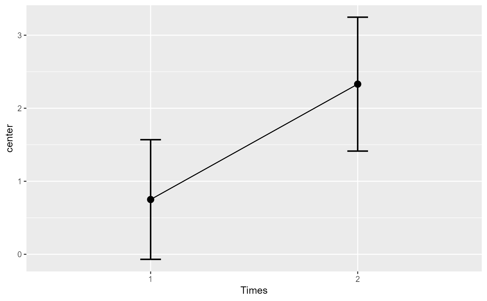
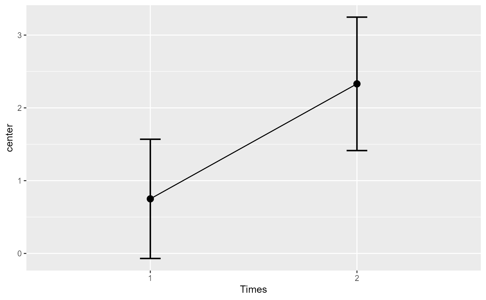

The function suberbPlot() plots standard error or confidence interval for various
descriptive statistics under various designs, sampling schemes, population size and purposes,
according to the suberb framework. See (Cousineau et al. 2021)
for more.
superbPlot(
data,
BSFactors = NULL,
WSFactors = NULL,
WSDesign = "fullfactorial",
factorOrder = NULL,
variables,
statistic = "mean",
errorbar = "CI",
gamma = 0.95,
adjustments = list(purpose = "single", popSize = Inf, decorrelation = "none",
samplingDesign = "SRS"),
showPlot = TRUE,
plotStyle = "bar",
preprocessfct = NULL,
postprocessfct = NULL,
clusterColumn = "",
...
)Arguments
- data
Dataframe in wide format
- BSFactors
The name of the columns containing the between-subject factor(s)
- WSFactors
The name of the within-subject factor(s)
- WSDesign
the within-subject design if not a full factorial design (default "fullfactorial")
- factorOrder
Order of factors as shown in the graph (in that order: x axis, groups, horizontal panels, vertical panels)
- variables
The dependent variable(s) as strings
- statistic
The summary statistic function to use as a string
- errorbar
The function that computes the error bar. Should be "CI" or "SE" or any function name if you defined a custom function. Default to "CI"
- gamma
The coverage factor; necessary when
errorbar == "CI". Default is 0.95.- adjustments
List of adjustments as described below. Default is
adjustments = list(purpose = "single", popSize = Inf, decorrelation = "none", samplingDesign = "SRS")- showPlot
Defaults to TRUE. Set to FALSE if you want the output to be the summary statistics and intervals.
- plotStyle
The type of object to plot on the graph. See full list below. Defaults to "bar".
- preprocessfct
is a transform (or vector of) to be performed first on data matrix of each group
- postprocessfct
is a transform (or vector of)
- clusterColumn
used in conjunction with samplingDesign = "CRS", indicates which column contains the cluster membership
- ...
In addition to the parameters above, superbPlot also accept a number of optional arguments that will be transmitted to the plotting function, such as pointParams (a list of ggplot2 parameters to input inside geoms; see ?geom_bar2) and errorbarParams (a list of ggplot2 parameters for geom_errorbar; see ?geom_errorbar)
Value
a plot with the correct error bars or a table of those summary statistics. The plot is a ggplot2 object with can be modified with additional declarations.
Details
The possible adjustements are the following
popsize: Size of the population under study. Defaults to Inf
purpose: The purpose of the comparisons. Defaults to "single". Can be "single", "difference", or "tryon".
decorrelation: Decorrelation method for repeated measure designs. Chooses among the methods "CM", "LM", "CA", "UA", "LDr" (with r an integer) or "none". Defaults to "none". "CA" is correlation-adjusted (Cousineau 2019) ; "UA" is based on the unitary Alpha method (derived from the Cronbach alpha; see (Laurencelle and Cousineau 2023) ). "LDr" is local decorrelation (useful for long time series with autoregressive correlation structures; see (Cousineau et al. in preparation) ); .
samplingDesign: Sampling method to obtain the sample. implemented sampling is "SRS" (Simple Randomize Sampling) and "CRS" (Cluster-Randomized Sampling).
In version 0.97.5, the layouts for plots are the following:
"bar" Shows the summary statistics with bars and error bars;
"line" Shows the summary statistics with lines connecting the conditions over the first factor;
"point" Shows the summary statistics with isolated points
"pointjitter" Shows the summary statistics along with jittered points depicting the raw data;
"pointjitterviolin" Also adds violin plots to the previous layout
"pointindividualline" Connects the raw data with line along the first factor (which should be a repeated-measure factor)
"raincloud" Illustrates the distribution with a cloud (half_violin_plot) and jittered dots next to it. Looks better when coordinates are flipped
+coord_flip().
References
Cousineau D (2019).
“Correlation-adjusted standard errors and confidence intervals for within-subject designs: A simple multiplicative approach.”
The Quantitative Methods for Psychology, 15, 226 -- 241.
doi:10.20982/tqmp.15.3.p226
.
Cousineau D, Goulet M, Harding B (2021).
“Summary plots with adjusted error bars: The superb framework with an implementation in R.”
Advances in Methods and Practices in Psychological Science, 4, 1--18.
doi:10.1177/25152459211035109
.
Cousineau D, Proulx A, Potvin-Pilon A, Fiset D (in preparation).
“Local decorrelation for error bars in time series.”
tbd.
Laurencelle L, Cousineau D (2023).
“Analysis of proportions using arcsine transform with any experimental design.”
Frontiers in Psychology, 13, 1045436.
doi:10.3389/fpsyg.2022.1045436
.
Examples
######################################################################
# Basic example using a built-in dataframe as data.
# By default, the mean is computed and the error bar are 95% confidence intervals
superbPlot(ToothGrowth, BSFactors = c("dose", "supp"),
variables = "len")
 # Example changing the summary statistics to the median and
# the error bar to 80% confidence intervals
superbPlot(ToothGrowth, BSFactors = c("dose", "supp"),
variables = "len", statistic = "median", errorbar = "CI", gamma = .80)
# Example changing the summary statistics to the median and
# the error bar to 80% confidence intervals
superbPlot(ToothGrowth, BSFactors = c("dose", "supp"),
variables = "len", statistic = "median", errorbar = "CI", gamma = .80)
 # Example introducing adjustments for pairwise comparisons
# and assuming that the whole population is limited to 200 persons
superbPlot(ToothGrowth, BSFactors = c("dose", "supp"),
variables = "len",
adjustments = list( purpose = "difference", popSize = 200) )
# Example introducing adjustments for pairwise comparisons
# and assuming that the whole population is limited to 200 persons
superbPlot(ToothGrowth, BSFactors = c("dose", "supp"),
variables = "len",
adjustments = list( purpose = "difference", popSize = 200) )
 # This example adds ggplot directives to the plot produced
library(ggplot2)
superbPlot(ToothGrowth, BSFactors = c("dose", "supp"),
variables = "len") +
xlab("Dose") + ylab("Tooth Growth") +
theme_bw()
# This example adds ggplot directives to the plot produced
library(ggplot2)
superbPlot(ToothGrowth, BSFactors = c("dose", "supp"),
variables = "len") +
xlab("Dose") + ylab("Tooth Growth") +
theme_bw()
 ######################################################################
# The following examples are based on repeated measures
library(gridExtra)
options(superb.feedback = 'none') # shut down 'warnings' and 'design' interpretation messages
# A simple example: The sleep data
# The sleep data are paired data showing the additional time of sleep with
# the soporific drugn #1 (("group = 1") and with the soporific drug #2 ("group = 2").
# There is 10 participants with two measurements.
# sleep is available in long format so we transform it to the in wide format:
sleep2 <- reshape(sleep, direction = "wide", idvar = "ID", timevar = "group")
sleep2
#> ID extra.1 extra.2
#> 1 1 0.7 1.9
#> 2 2 -1.6 0.8
#> 3 3 -0.2 1.1
#> 4 4 -1.2 0.1
#> 5 5 -0.1 -0.1
#> 6 6 3.4 4.4
#> 7 7 3.7 5.5
#> 8 8 0.8 1.6
#> 9 9 0.0 4.6
#> 10 10 2.0 3.4
# Makes the plots first without decorrelation:
superbPlot(sleep2,
WSFactors = "Times(2)",
variables = c("extra.1", "extra.2")
)
######################################################################
# The following examples are based on repeated measures
library(gridExtra)
options(superb.feedback = 'none') # shut down 'warnings' and 'design' interpretation messages
# A simple example: The sleep data
# The sleep data are paired data showing the additional time of sleep with
# the soporific drugn #1 (("group = 1") and with the soporific drug #2 ("group = 2").
# There is 10 participants with two measurements.
# sleep is available in long format so we transform it to the in wide format:
sleep2 <- reshape(sleep, direction = "wide", idvar = "ID", timevar = "group")
sleep2
#> ID extra.1 extra.2
#> 1 1 0.7 1.9
#> 2 2 -1.6 0.8
#> 3 3 -0.2 1.1
#> 4 4 -1.2 0.1
#> 5 5 -0.1 -0.1
#> 6 6 3.4 4.4
#> 7 7 3.7 5.5
#> 8 8 0.8 1.6
#> 9 9 0.0 4.6
#> 10 10 2.0 3.4
# Makes the plots first without decorrelation:
superbPlot(sleep2,
WSFactors = "Times(2)",
variables = c("extra.1", "extra.2")
)
 # As seen the error bar are very long. Lets take into consideration correlation...
# ... with decorrelation (technique Correlation-adjusted CA):
superbPlot(sleep2,
WSFactors = "Times(2)",
variables = c("extra.1", "extra.2"),
# only difference:
adjustments = list(purpose = "difference", decorrelation = "CA")
)
# As seen the error bar are very long. Lets take into consideration correlation...
# ... with decorrelation (technique Correlation-adjusted CA):
superbPlot(sleep2,
WSFactors = "Times(2)",
variables = c("extra.1", "extra.2"),
# only difference:
adjustments = list(purpose = "difference", decorrelation = "CA")
)
 # The error bars shortened as the correlation is substantial (r = .795).
######################################################################
# Another example: The Orange data
# Use the Orange example, but let's define shorter column names...
names(Orange) <- c("Tree","age","circ")
# ... and turn the data into a wide format using superbToWide:
Orange.wide <- superbToWide(Orange, id = "Tree", WSFactors = "age", variable = "circ")
# This example contains 5 trees whose diameter (in mm) has been measured at various age (in days):
Orange.wide
#> Tree circ_118 circ_484 circ_664 circ_1004 circ_1231 circ_1372 circ_1582
#> 1 1 30 58 87 115 120 142 145
#> 2 2 33 69 111 156 172 203 203
#> 3 3 30 51 75 108 115 139 140
#> 4 4 32 62 112 167 179 209 214
#> 5 5 30 49 81 125 142 174 177
# Makes the plots first without decorrelation:
p1 <- superbPlot( Orange.wide, WSFactors = "age(7)",
variables = c("circ_118","circ_484","circ_664","circ_1004","circ_1231","circ_1372","circ_1582"),
adjustments = list(purpose = "difference", decorrelation = "none")
) +
xlab("Age level") + ylab("Trunk diameter (mm)") +
coord_cartesian( ylim = c(0,250) ) + labs(title="''Standalone'' confidence intervals")
# ... and then with decorrelation (technique Correlation-adjusted CA):
p2 <- superbPlot( Orange.wide, WSFactors = "age(7)",
variables = c("circ_118","circ_484","circ_664","circ_1004","circ_1231","circ_1372","circ_1582"),
adjustments = list(purpose = "difference", decorrelation = "CA")
) +
xlab("Age level") + ylab("Trunk diameter (mm)") +
coord_cartesian( ylim = c(0,250) ) + labs(title="Decorrelated confidence intervals")
# You can present both plots side-by-side
grid.arrange(p1, p2, ncol=2)

######################################################################
# The error bars shortened as the correlation is substantial (r = .795).
######################################################################
# Another example: The Orange data
# Use the Orange example, but let's define shorter column names...
names(Orange) <- c("Tree","age","circ")
# ... and turn the data into a wide format using superbToWide:
Orange.wide <- superbToWide(Orange, id = "Tree", WSFactors = "age", variable = "circ")
# This example contains 5 trees whose diameter (in mm) has been measured at various age (in days):
Orange.wide
#> Tree circ_118 circ_484 circ_664 circ_1004 circ_1231 circ_1372 circ_1582
#> 1 1 30 58 87 115 120 142 145
#> 2 2 33 69 111 156 172 203 203
#> 3 3 30 51 75 108 115 139 140
#> 4 4 32 62 112 167 179 209 214
#> 5 5 30 49 81 125 142 174 177
# Makes the plots first without decorrelation:
p1 <- superbPlot( Orange.wide, WSFactors = "age(7)",
variables = c("circ_118","circ_484","circ_664","circ_1004","circ_1231","circ_1372","circ_1582"),
adjustments = list(purpose = "difference", decorrelation = "none")
) +
xlab("Age level") + ylab("Trunk diameter (mm)") +
coord_cartesian( ylim = c(0,250) ) + labs(title="''Standalone'' confidence intervals")
# ... and then with decorrelation (technique Correlation-adjusted CA):
p2 <- superbPlot( Orange.wide, WSFactors = "age(7)",
variables = c("circ_118","circ_484","circ_664","circ_1004","circ_1231","circ_1372","circ_1582"),
adjustments = list(purpose = "difference", decorrelation = "CA")
) +
xlab("Age level") + ylab("Trunk diameter (mm)") +
coord_cartesian( ylim = c(0,250) ) + labs(title="Decorrelated confidence intervals")
# You can present both plots side-by-side
grid.arrange(p1, p2, ncol=2)

######################################################################